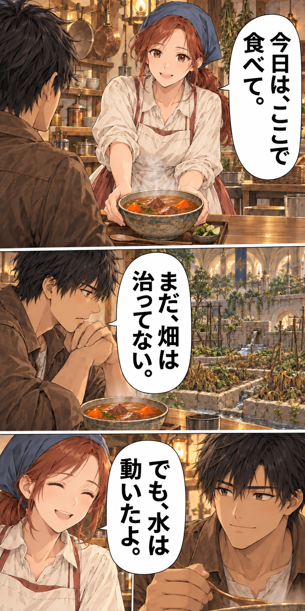

塔の農夫は、
英雄を食わせる
塔の三階に召喚された農夫。
畑と食堂を立て直し、冒険者の明日の一皿をつくる。
- 第1話 水の出口読む →
- 第2話 救える畝、残せない畝読む →
- 第3話 一度に播くな読む →
- 第4話 低い桶は、嘘をつかない読む →
- 第5話 土は、点数じゃない読む →
- 第6話 おいしいだけじゃ、店は続かない読む →
- 第7話 収穫日は、約束できるか読む →
- 第8話 初めての、自分たちの収穫読む →
- 第9話 十二人に届ける一便読む →
- 第10話 帰ってくる場所読む →
- 第11話 空席が消えた朝読む →
- 第12話 選ばれた十六皿読む →
- 第13話 値段の向こう側読む →
- 第14話 一口で変わる評価読む →
- 第15話 農夫を連れていけ読む →
- 第16話 四階の空気読む →
- 第17話 根が飲んでいる読む →
- 第18話 農夫の一手読む →